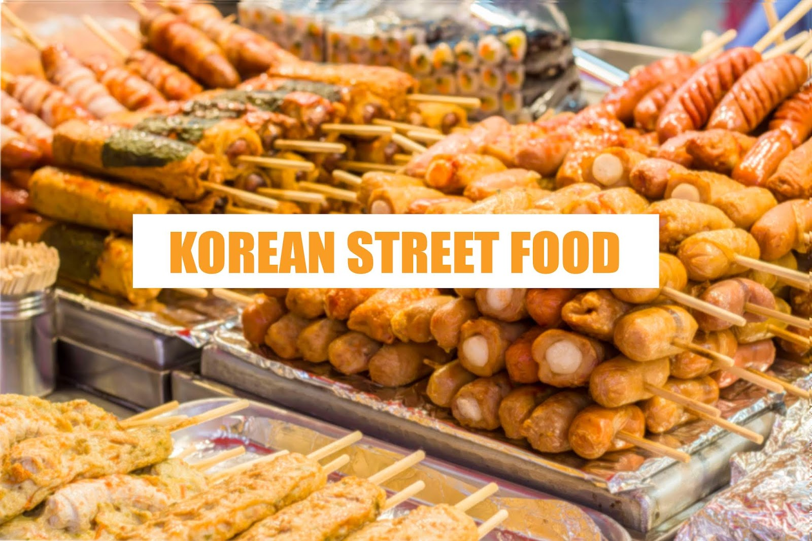

Korean food is the most appetizing, flavoursome and appealing food !! The flavour, seasonings, tanginess and aromatic - mouth watering views fill up our stomachs before even devouring it !!

South Korea is home to one of the world’s most diverse and acquired cuisines that not only warms the hearts of locals and travelers alike but also fill their stomachs. Even though Seoul showcases many globalized delicacies, the traditional favorites are loved the most
Whether you’re looking for a quick, salty snack or an adventure for your taste buds, you're in right place to find out about some of the best Korean street food!